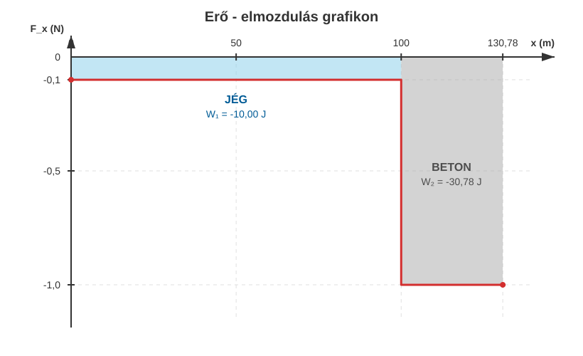
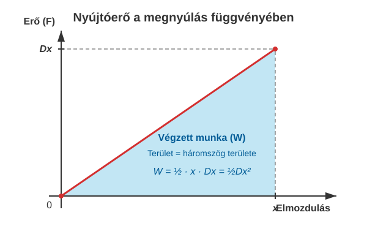

Egy tömegű jégkorong csúszik a jégen. A korong kezdősebessége . A csúszási súrlódási együttható a jég és a korong között . A korong az első megtétele után lecsúszik a pályáról és a betonon csúszik, ahol a súrlódási együttható . * Mekkora erő lassítja a korongot a jégen? * Mekkora sebességre lassul le a korong, mikor a betonra ér? * Mekkora erő lassítja a korongot a betonon? * Mekkora utat tesz meg a korong a betonon a megállásig? * Mekkora a súrlódási erő munkája a jégen? * Mekkora a súrlódási erő munkája a betonon? * Rajzoljuk fel a súrlódási erő grafikonját a megtett út függvényében! Mekkora a grafikon görbéje alatti terület?
Mozogjon a korong az x-tengely irányában. Ekkor az x-komponensekkel dolgozhatunk.
A másodfokú egyenlet két megoldása közül a rövidebb idő a fizikailag helyes (a hosszabb idő azt jelentené, hogy a test a megállás után visszafelé indulna, de a súrlódás miatt ez nem történik meg). Tehát az idő .
A további számolási hibák elkerülése végett a pontos értékkel számolunk tovább.
A gyorsulás kiszámítása:
Ez átrendezhető, hogy az ismeretlen időt kiszámítsuk.
Mivel a korong kezdősebességét jelöli a betonon való fékeződéskor, ezért a következő képlet adja az utat:
Most már könnyű kiszámolni a munkákat!
A teljes munka, mely meg kell egyezzen a mozgási energia csökkenésével, a következő:
Valóban, a mozgási energia megváltozása a következő:
A két eredmény tökéletesen megegyezik.

Az ábráról látszik, hogy változó erő esetén, amikor az erő szakaszosan állandó, a munka az erő-elmozdulás grafikon alatti terület. A súrlódási erő példánkban negatív, hisz a mozgást fékezi, tehát az elmozdulással ellentétes irányú. Ilyenkor a terület negatív előjelű és az erő az elmozdulás tengelye alatt halad.
Ez a kijelentés általánosan igaz tetszőleges, változó erő esetén.
A végzett munka nem más, mint az erő-elmozdulás grafikon alatti (előjeles) terület.
Legyen a rugó kezdetben nyújtatlan, majd nyújtsuk meg lassan, gyorsulásmentesen úgy, hogy megnyúlása a folyamat végére legyen! Mekkora munkát kell ehhez végeznünk? Az erő a megnyújtás kezdetén szinte nulla, hisz a rugó itt még nem fejt ki erőt, majd a folyamat végén erőt kell kifejteni, hogy a rugó nyújtva maradjon. Az erő az elmozdulással egyenes arányban nő. Ábrázoljuk a megnyújtáshoz szükséges erőt az elmozdulás függvényében! A következő grafikont kapjuk:

A grafikonról látszik, hogy a rugó megnyújtásához szükséges munka egy derékszögű háromszög területe:
A rugó megnyújtásához szükséges munka a rugalmas energiát növeli meg. A rugalmas erő is konzervatív erő, és így az általa végzett munka a rugó rugalmas energiáját csökkenti. A rugalmas energia kiszámítása tehát:
A rugalmas energia is a helyzeti energia egy formája, akárcsak a gravitációs helyzeti energia.
Egy rugóállandójú rugót -rel megnyújtunk. * Mekkora erő kell a rugó nyújtva tartásához? * Mekkora munkát végeztünk, és mennyi a rugalmas energia? * Egy veszteségmentes katapultban ez a rugó mekkora sebességre tud gyorsítani egy tömegű golyót, ha a veszteségektől eltekinthetünk? * A golyót a katapult függőlegesen felfelé lövi ki. Milyen magasra emelkedik? A légellenállástól eltekintünk.
Ellenőrizzük a golyó által elért magasságot a szimulátorban!
Egy
tömegű dobozt meglökünk a padlón
kezdősebességgel. A csúszási súrlódási együttható a doboz és a padló
között
.
Mekkora utat tesz meg a doboz a megállásig, és mennyi a súrlódási
erő által végzett munka? Ellenőrizd az eredményedet a munkatétel
segítségével!
Egy vízszintes felületen fekvő,
direkciós erejű (rugóállandójú) rugónak nekiütköztetünk egy játékkocsit
().
A kocsi sebessége az ütközés pillanatában
.
Legfeljebb mekkora lesz a rugó maximális összenyomódása, ha a
súrlódástól teljes mértékben eltekintünk?
Egy rugós kilövő
()
rugóját
-rel
összenyomjuk, majd egy
-os
golyót lövünk ki vele egy vízszintes asztalon. Az asztalon a súrlódási
együttható
.
Milyen messzire jut a golyó a kilövés pontjától (a rugó nyugalmi
helyzetétől mérve), mire a súrlódás miatt teljesen megáll?